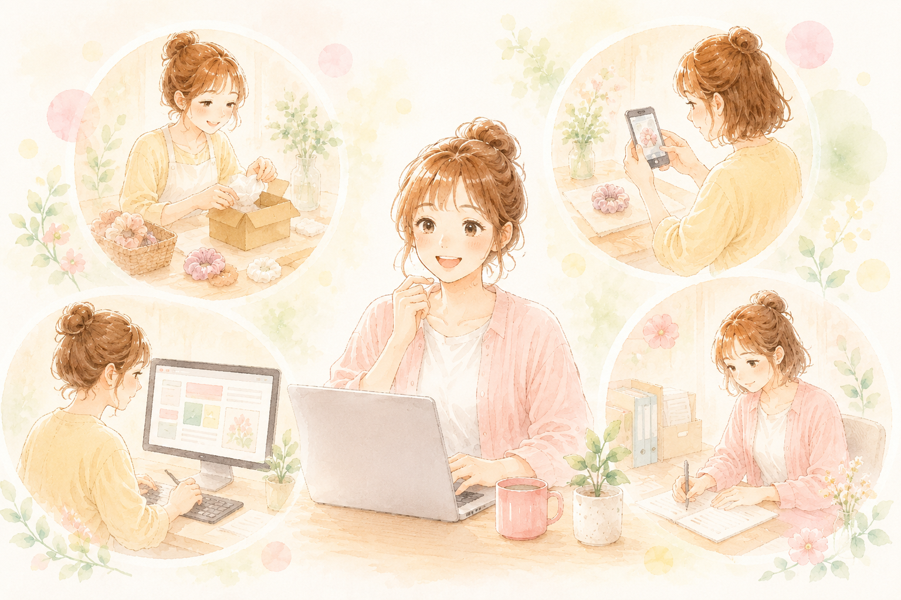
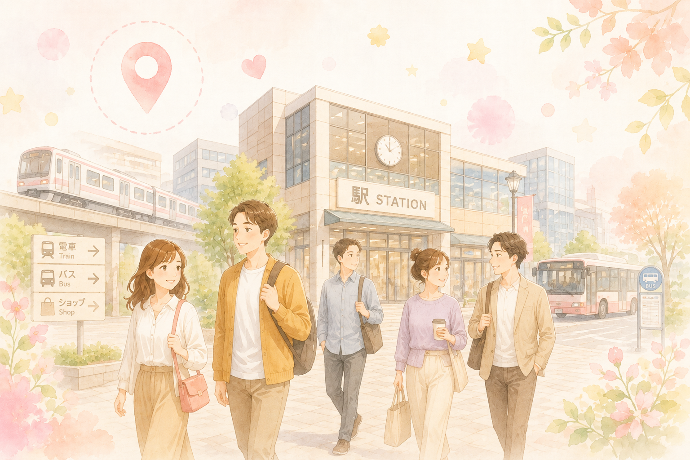

軽作業からネット販売、HP作成、事務作業まで。あなたに合った業務で、実践的なスキルが身につきます。

JR相模原駅から徒歩3分。お子さんからシニアまで、誰もが通いやすい位置です。
社会福祉士・障害福祉サービス経験者が、丁寧にサポート。安心して通所できます。
お菓子の箱詰め、ヘアアクセサリー関連、商品発送業務など。基本的な作業スキルを身につけられます。
月額目安：1万～2万円写真撮影から商品説明作成、顧客対応まで。実践的な販売スキルが習得できます。
月額目安：2万～3万円デジタルスキルを身につけたい方向け。WordPressなどを使ったHP管理業務です。
月額目安：2万～3万5千円データ入力、メール送信、書類整理など。事務系スキルの習得に最適です。
月額目安：1万5千～2万5千円詳しくはこちらをご覧ください
サービス詳細を見るA: 身体障害、知的障害、精神障害、発達障害、難病をお持ちの18才以上の方が利用できます。障害者手帳の有無は問いません。まずはお気軽にご相談ください。
A: サービス利用料は無料です。給付金制度により、ご利用者負担はありません（一部を除く）。むしろ、頑張った分、工賃として月1万～3万円程度受け取ることができます。
A: はい、見学・相談は完全無料です。ご本人やご家族、支援者の方もお気軽にお越しください。
神奈川県相模原市中央区相模原3-8-26
サンライズビル3階
平日 9:30～17:30
土曜 11:00～17:00
JR相模原駅より徒歩3分